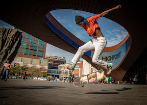

Skateboarding is an action sport originating in the United States that involves riding and performing tricks using a skateboard, as well as a recreational activity, an art form, an entertainment industry job, and a method of transportation.[1][2] Skateboarding has been shaped and influenced by many skateboarders throughout the years. A 2009 report found that the skateboarding market is worth an estimated $4.8 billion in annual revenue, with 11.08 million active skateboarders in the world.[3] In 2016, it was announced that skateboarding will be represented at the 2020 Summer Olympics in Tokyo, for both male and female teams.[4]
Since the 1970s, skateparks have been constructed specifically for use by skateboarders, freestyle BMXers, aggressive skaters, and very recently, scooters.[5] However, skateboarding has become controversial in areas in which the activity, although illegal, has damaged curbs, stoneworks, steps, benches, plazas, and parks.[1][6]
Skater in front of the Barclays Center in Brooklyn, New York (2019)
The first skateboards started with wooden boxes, or boards, with roller skate wheels attached to the bottom. Crate scooters preceded skateboards, having a wooden crate attached to the nose (front of the board), which formed rudimentary handlebars.[7][8][9] The boxes turned into planks, similar to the skateboard decks of today.[1]
Skateboarding, as we know it, was probably born sometime in the late 1940s, or early 1950s,[citation needed] when surfers in California wanted something to do when the waves were flat. This was called "sidewalk surfing" – a new wave of surfing on the sidewalk as the sport of surfing became highly popular. No one knows who made the first board; it seems that several people came up with similar ideas at around the same time. The first manufactured skateboards were ordered by a Los Angeles, California surf shop, meant to be used by surfers in their downtime. The shop owner, Bill Richard, made a deal with the Chicago Roller Skate Company to produce sets of skate wheels, which they attached to square wooden boards. Accordingly, skateboarding was originally denoted "sidewalk surfing" and early skaters emulated surfing style and maneuvers, and performed barefoot.[7][1][10]
By the 1960s a small number of surfing manufacturers in Southern California such as Jack's, Kips', Hobie, Bing's and Makaha started building skateboards that resembled small surfboards, and assembled teams to promote their products. One of the earliest Skateboard exhibitions was sponsored by Makaha's founder, Larry Stevenson, in 1963 and held at the Pier Avenue Junior High School in Hermosa Beach, California.[11][12][13] Some of these same teams of skateboarders were also featured on a television show called Surf's Up in 1964, hosted by Stan Richards, that helped promote skateboarding as something new and fun to do.[14]
As the popularity of skateboarding began expanding, the first skateboarding magazine, The Quarterly Skateboarder was published in 1964.[1] John Severson, who published the magazine, wrote in his first editorial: Today's skateboarders are founders in this sport—they're pioneers—they are the first. There is no history in Skateboarding—its being made now—by you. The sport is being molded and we believe that doing the right thing now will lead to a bright future for the sport. Already, there are storm clouds on the horizon with opponents of the sport talking about ban and restriction.[15]
One of the earliest sponsored skateboarders, Patti McGee, was paid by Hobie and Vita Pak to travel around the country to do skateboarding exhibitions and to demonstrate skateboarding safety tips. McGee made the cover of Life magazine[1][20] in 1965 and was featured on several popular television programs—The Mike Douglas Show, What's My Line? and The Tonight Show Starring Johnny Carson—which helped make skateboarding even more popular at the time.[21][22][23] Some other well known surfer-style skateboarders of the time were Danny Bearer, Torger Johnson, Bruce Logan, Bill and Mark Richards, Woody Woodward, and Jim Fitzpatrick.
The growth of the sport during this period can also be seen in sales figures for Makaha, which quoted $4 million worth of board sales between 1963 and 1965.[24] By 1966 a variety of sources began to claim that skateboarding was dangerous, resulting in shops being reluctant to sell them, and parents being reluctant to buy them. In 1966 sales had dropped significantly[24] and Skateboarder Magazine had stopped publication. The popularity of skateboarding dropped and remained low until the early 1970s.[8][25][26]
In the early 1970s, Frank Nasworthy started to develop a skateboard wheel made of polyurethane, calling his company Cadillac Wheels.[8] Prior to this new material, skateboards wheels were metal or "clay" wheels.[1] The improvement in traction and performance was so immense that from the wheel's release in 1972 the popularity of skateboarding started to rise rapidly again, causing companies to invest more in product development. Nasworthy commissioned artist Jim Evans to do a series of paintings promoting Cadillac Wheels, they were featured as ads and posters in the resurrected Skateboarder Magazine, and proved immensely popular in promoting the new style of skateboarding.
In the early 1970s skateparks had not been invented yet, so skateboarders would flock and skateboard in such urban places as the Escondido reservoir in San Diego, California.[1] Skateboarding magazine would publish the location and skateboarders made up nicknames for each location such as the Tea Bowl, the Fruit Bowl, Bellagio, the Rabbit Hole, Bird Bath, the Egg Bowl, Upland Pool and the Sewer Slide. Some of the development concepts in the terrain of skateparks were actually taken from the Escondido reservoir.[27][28][29] Many companies started to manufacture trucks (axles) specially designed for skateboarding, reached in 1976 by Tracker Trucks. As the equipment became more maneuverable, the decks started to get wider, reaching widths of 10 inches (250 mm) and over, thus giving the skateboarder even more control.[1] A banana board is a skinny, flexible skateboard made of polypropylene with ribs on the underside for structural support. These were very popular during the mid-1970s and were available in a myriad of colors, bright yellow probably being the most memorable, hence the name.
In 1975 skateboarding had risen back in popularity enough to have one of the largest skateboarding competitions since the 1960s, the Del Mar National Championships, which is said to have had up to 500 competitors. The competition lasted two days and was sponsored by Bahne Skateboards and Cadillac Wheels. While the main event was won by freestyle spinning skate legend Russ Howell,[30][31] a local skate team from Santa Monica, California, the Zephyr team, ushered in a new era of surfer style skateboarding during the competition that would have a lasting impact on skateboarding's history. With a team of 12, including skating legends such as Jay Adams, Tony Alva, Peggy Oki and Stacy Peralta, they brought a new progressive style of skateboarding to the event, based on the style of Hawaiian surfers Larry Bertlemann, Buttons Kaluhiokalani and Mark Liddell.[32] Craig Stecyk, a photo journalist for Skateboarder Magazine, wrote about and photographed the team, along with Glen E. Friedman, and shortly afterwards ran a series on the team called the Dogtown articles, which eventually immortalized the Zephyr skateboard team. The team became known as the Z-Boys and would go on to become one of the most influential teams in skateboarding's history.[27][33][34]
Soon, skateboarding contests for cash and prizes, using a professional tier system, began to be held throughout California, such as the California Free Former World Professional Skateboard Championships, which featured freestyle and slalom competitions.[35]
A precursor to the extreme sport of street luge, that was sanctioned by the United States Skateboarding Association (USSA), also took place during the 1970s in Signal Hill, California. The competition was called "The Signal Hill Skateboarding Speed Run", with several competitors earning entries into the Guinness Book of World Records, at the time clocking speeds of over 50 mph (80 km/h) on a skateboard. Due to technology and safety concerns at the time, when many competitors crashed during their runs, the sport did not gain popularity or support during this time.[36][37]
In March 1976, Skateboard City skatepark in Port Orange, Florida and Carlsbad Skatepark in San Diego County, California would be the first two large size US skateparks to be opened to the public, just a week apart.[1] They were the first of some 200 skateparks that would be built through 1982. This was due in part to articles that were running in the investment journals at the time, stating that skateparks were a good investment.[7][27][38] Notable skateboarders from the 1970s also include Ty Page, Tom Inouye, Laura Thornhill, Ellen O'Neal, Kim Cespedes, Bob Biniak, Jana Payne, Waldo Autry, Robin Logan, Bobby Piercy, Russ Howell, Ellen Berryman, Shogo Kubo, Desiree Von Essen, Henry Hester, Robin Alaway, Paul Hackett, Michelle Matta, Bruce Logan, Steve Cathey, Edie Robertson, Mike Weed, David Hackett, Gregg Ayres, Darren Ho, and Tom Sims.[35]
Manufacturers started to experiment with more exotic composites and metals, like fiberglass and aluminium, but the common skateboards were made of maple plywood.[1] The skateboarders took advantage of the improved handling of their skateboards and started inventing new tricks. Skateboarders, most notably Ty Page, Bruce Logan, Bobby Piercy, Kevin Reed, and the Z-Boys started to skate the vertical walls of swimming pools that were left empty in the 1976 California drought. This started the "vert" trend in skateboarding. With increased control, vert skaters could skate faster and perform more dangerous tricks, such as slash grinds and frontside/backside airs. This caused liability concerns and increased insurance costs to skatepark owners, and the development (first by Norcon, then more successfully by Rector) of improved knee pads that had a hard sliding cap and strong strapping proved to be too-little-too-late. During this era, the "freestyle" movement in skateboarding began to splinter off and develop into a much more specialized discipline, characterized by the development of a wide assortment of flat-ground tricks.
As a result of the "vert" skating movement, skate parks had to contend with high liability costs that led to many park closures. In response, vert skaters started making their own ramps, while freestyle skaters continued to evolve their flatland style. Thus, by the beginning of the 1980s, skateboarding had once again declined in popularity.[25]
This period was fueled by skateboard companies that were run by skateboarders. The focus was initially on vert ramp skateboarding. The invention of the no-hands aerial (later known as the ollie) by Alan Gelfand in Florida in 1976,[39] and the almost parallel development of the grabbed aerial by George Orton and Tony Alva in California, made it possible for skaters to perform airs on vertical ramps. While this wave of skateboarding was sparked by commercialized vert ramp skating, a majority of people who skateboarded during this period did not ride vert ramps. As most people could not afford to build vert ramps, or did not have access to nearby ramps, street skating increased in popularity.
Freestyle skating remained healthy throughout this period, with pioneers such as Rodney Mullen inventing many of the basic tricks that would become the foundation of modern street skating, such as the "Impossible" and the "kickflip".[1] The influence that freestyle exerted upon street skating became apparent during the mid-1980s; however, street skating was still performed on wide vert boards with short noses, slide rails, and large soft wheels. In response to the tensions created by this confluence of skateboarding "genres", a rapid evolution occurred in the late 1980s to accommodate the street skater. Since few skateparks were available to skaters at this time, street skating pushed skaters to seek out shopping centers and public and private property as their "spot" to skate. (Public opposition, in which businesses, governments, and property owners have banned skateboarding on properties under their jurisdiction or ownership, would progressively intensify over the following decades.) [1][40][41] By 1992, only a small fraction of skateboarders continuing to take part in a highly technical version of street skating, combined with the decline of vert skating, produced a sport that lacked the mainstream appeal to attract new skaters.
During this period, numerous skateboarders—as well as companies in the industry—paid tribute to the scenes of Marty McFly skateboarding in the film Back to the Future for its influence in this regard. Examples can be seen in promotional material, in interviews in which professional skateboarders cite the film as an initiation into the action sport, and in the public's recognition of the film's influence.[42][43] Tony Hawk has stated that “there are plenty of legendary pros that I know of that started skating because they saw that [film].” [44]
Skateboarding during the 1990s became dominated by street skateboarding.[1] Most boards are about 7 1⁄4 to 8 inches (180 to 200 mm) wide and 30 to 32 inches (760 to 810 mm) long. The wheels are made of an extremely hard polyurethane, with hardness (durometer) approximately 99A. The wheel sizes are relatively small so that the boards are lighter, and the wheels' inertia is overcome quicker, thus making tricks more manageable. Board styles have changed dramatically since the 1970s but have remained mostly alike since the mid-1990s. The contemporary shape of the skateboard is derived from the freestyle boards of the 1980s with a largely symmetrical shape and relatively narrow width. This form had become standard by the mid-1990s.[45]
By 2001 skateboarding had gained so much popularity that more American people under the age of 18 rode skateboards (10.6 million) than played baseball (8.2 million), although traditional organized team sports still dominated youth programs overall.[46] Skateboarding and skateparks began to be viewed and used in a variety of new ways to complement academic lessons in schools, including new non-traditional physical education skateboarding programs, like Skatepass[1][47] and Skateistan,[48] to encourage youth to have better attendance, self-discipline and confidence.[49][50][51] This was also based on the healthy physical opportunities skateboarding was understood to bring participants for muscle & bone strengthening and balance, as well as the positive impacts it can have on youth in teaching them mutual respect, social networking, artistic expression and an appreciation of the environment.[1][52][53][54][55]
In 2003 Go Skateboarding Day was founded in southern California by the International Association of Skateboard Companies (IASC)[56] to promote skateboarding throughout the world. It is celebrated annually on June 21 "to define skateboarding as the rebellious, creative celebration of independence it continues to be."[57][58][59][60][61] According to market research firm American Sports Data the number of skateboarders worldwide increased by more than 60 percent between 1999 and 2002—from 7.8 million to 12.5 million.[62]
Many cities also began implementing recreation plans and statutes during this time period, as part of their vision for local parks and communities to make public lands more available, in particular, for skateboarding, inviting skateboarders to come in off of the city streets and into organized skateboarding activity areas.[1] By 2006 there were over 2,400 skateparks worldwide and the design of skateparks themselves had made a transition, as skaters turned designers.[46][63][64][65][66] Many new places to skateboard designed specifically for street skaters, such as the Buszy in Milton Keynes, UK, and the Safe Spot Skate Spot program, first initiated by professional skateboarder Rob Dyrdek throughout many cities, allowed for the creation of smaller alternative safe skate plazas to be built at a lower cost.[1][67] One of the largest locations ever built to skateboard in the world, SMP Skatepark in China, at 12,000 square meters in size, was built complete with a 5,000-seat stadium.[1][68]
In 2009 Skatelab opened the Skateboarding Hall of Fame & Skateboard Museum. Nominees are chosen by the IASC.[69][70]
Efforts have been taken to improve recognition of the cultural heritage as well as the positive effects of encouraging skateboarding within designated spaces. In 2015, the John F. Kennedy Center for the Performing Arts in Washington, D.C., hosted an event at which skateboarders accompanied by music did tricks on a ramp constructed for a festival of American culture.[71] The event was the climax of a ten-day project that transformed a federal institution formerly off-limits to the skateboarding community into a platform for that community to show its relevance through shared cultural action in a cultural common space.
By raising £790,000, the Long Live Southbank[72] initiative managed in 2017 to curb the destruction of a forty years old spot in London due to urban planning, a salvaging operation whose effect extends beyond skateboarding.[1] The presence of a designated skating area within this public space keeps the space under nearly constant watch and drives homeless people away, increasing the feeling of safety in and near the space.[73] The activity attracts artists such as photographers and film makers, as well as a significant number of tourists, which in turn drives economic activity in the neighborhood.[74]
Recently, barefoot skating has been experiencing a revival. Many skaters ride barefoot, particularly in summer and in warmer countries, such as South Africa, Australia, Spain and South America. The plastic penny board is intended to be ridden barefoot, as is the surfboard-inspired hamboard.
Electric skateboards became popular during the 2010s, as did self-balancing unicycles in a board format. The sport of skateboarding made its Olympics debut at the 2020 Summer Olympics in Tokyo, with both men's and women's events. Competitions took place during July and August 2021 in two disciplines: street and park (see Skateboarding at the 2020 Summer Olympics).[75]
With the evolution of skateparks and ramp skating, the skateboard began to change. Early skate tricks had consisted mainly of two-dimensional freestyle manoeuvres like riding on only two wheels ("wheelie" or "manual"), spinning only on the back wheels (a "pivot"), high jumping over a bar and landing on the board again, also known as a "hippie jump", long jumping from one board to another, (often over small barrels or fearless teenagers), or slalom. Another popular trick was the Bertlemann slide, named after Larry Bertelemann's surfing manoeuvres.
In 1976, skateboarding was transformed by the invention of the ollie by Alan "Ollie" Gelfand.[1] It remained largely a unique Florida trick until the summer of 1978, when Gelfand made his first visit to California. Gelfand and his revolutionary maneuvers caught the attention of the West Coast skaters and the media where it began to spread worldwide. The ollie was adapted to flat ground by Rodney Mullen in 1982. Mullen also invented the "Magic Flip," which was later renamed the kickflip, as well as many other tricks including, the 360 Kickflip, which is a 360 pop shove-it and a kickflip in the same motion. The flat ground ollie allowed skateboarders to perform tricks in mid-air without any more equipment than the skateboard itself, it has formed the basis of many street skating tricks. A recent development in the world of trick skating is the 1080, which was first ever landed by Tom Schaar in 2012.[76][77]
Skateboarding was popularized by the 1986 skateboarding cult classic Thrashin'. Directed by David Winters and starring Josh Brolin, it features appearances from many famous skaters such as Tony Alva, Tony Hawk, Christian Hosoi and Steve Caballero. Thrashin' also had a direct impact on Lords of Dogtown, as Catherine Hardwicke, who directed Lords of Dogtown, was hired by Winters to work on Thrashin' as a production designer where she met, worked with and befriended many famous skaters including the real Alva, Hawk, Hosoi and Caballero.[1]
Skateboarding was popularized by the 1986 skateboarding cult classic Thrashin'. Directed by David Winters and starring Josh Brolin, it features appearances from many famous skaters such as Tony Alva, Tony Hawk, Christian Hosoi and Steve Caballero. Thrashin' also had a direct impact on Lords of Dogtown, as Catherine Hardwicke, who directed Lords of Dogtown, was hired by Winters to work on Thrashin' as a production designer where she met, worked with and befriended many famous skaters including the real Alva, Hawk, Hosoi and Caballero.[1]
Skateboarding was popularized by the 1986 skateboarding cult classic Thrashin'. Directed by David Winters and starring Josh Brolin, it features appearances from many famous skaters such as Tony Alva, Tony Hawk, Christian Hosoi and Steve Caballero. Thrashin' also had a direct impact on Lords of Dogtown, as Catherine Hardwicke, who directed Lords of Dogtown, was hired by Winters to work on Thrashin' as a production designer where she met, worked with and befriended many famous skaters including the real Alva, Hawk, Hosoi and Caballero.[1]
Skateboarding was popularized by the 1986 skateboarding cult classic Thrashin'. Directed by David Winters and starring Josh Brolin, it features appearances from many famous skaters such as Tony Alva, Tony Hawk, Christian Hosoi and Steve Caballero. Thrashin' also had a direct impact on Lords of Dogtown, as Catherine Hardwicke, who directed Lords of Dogtown, was hired by Winters to work on Thrashin' as a production designer where she met, worked with and befriended many famous skaters including the real Alva, Hawk, Hosoi and Caballero.[1]
California duo Jan and Dean recorded the song "Sidewalk Surfin'" in 1964, which is the Beach Boys song "Catch a Wave" with new lyrics associated with skateboarding.
Certain cities still oppose the building of skate parks in their neighborhoods, for fear of increased crime and drugs in the area. The rift between the old image of skateboarding and a newer one is quite visible: magazines such as Thrasher portray skateboarding as dirty, rebellious, and still firmly tied to punk, while other publications, Transworld Skateboarding as an example, paint a more diverse and controlled picture of skateboarding. As more professional skaters use hip hop, reggae, or hard rock music accompaniment in their videos, many urban youths, hip hop fans, reggae fans, and hard rock fans are also drawn to skateboarding, further diluting the sport's punk image.
Group spirit supposedly influences the members of this community. In presentations of this sort, showcasing of criminal tendencies is absent, and no attempt is made to tie extreme sports to any kind of illegal activity. Female based skateboarding groups also exist, such as Brujas which is based in New York City. Many women use their participation in skate crews to perform an alternative form of femininity.[1][78] These female skate crews offer a safe haven for women and girls in cities, where they can skate and bond without male expectations or competition.
The increasing availability of technology is apparent within the skateboarding community. Many skateboarders record and edit videos of themselves and friends skateboarding. However, part of this culture is to not merely replicate but to innovate; emphasis is placed on finding new places and landing new tricks.
Whilst early skateboarders generally rode barefoot, preferring direct foot-to-board contact, and some skaters continue to do so, one of the early leading trends associated with the sub-culture of skateboarding itself, was the sticky-soled slip-on skate shoe, most popularized by Sean Penn's skateboarding character from the film Fast Times at Ridgemont High.[1][9] Because early skateboarders were actually surfers trying to emulate the sport of surfing, at the time when skateboards first came out on the market, many skateboarded barefoot. But skaters often lacked traction, which led to foot injuries.[26] This necessitated the need for a shoe that was specifically designed and marketed for skateboarding, such as the Randy "720", manufactured by the Randolph Rubber Company, and Vans sneakers, which eventually became cultural iconic signifiers for skateboarders during the 1970s and '80s as skateboarding became more widespread.[9][79][80][81][82][83]
While the skate shoes design afforded better connection and traction with the deck, skaterboarders themselves could often be identified when wearing the shoes, with Tony Hawk once saying, "If you were wearing Vans shoes in 86, you were a skateboarder".[27] Because of its connection with skateboarding, Vans financed the legendary skateboarding documentary Dogtown and Z-Boys and was the first sneaker company to endorse a professional skateboarder Stacy Peralta. Vans has a long history of being a major sponsor of many of skateboarding's competitions and events throughout skateboarding's history as well, including the Vans Warped Tour and the Vans Triple Crown Series.[1][9][84][85][86][87][88]
As it eventually became more apparent that skateboarding had a particular identity with a style of shoe, other brands of shoe companies began to specifically design skate shoes for functionality and style to further enhance the experience and culture of skateboarding including such brands as; Converse, Nike, DC Shoes, Globe, Adidas, Zoo York and World Industries. Many professional skateboarders are designed a pro-model skate shoe, with their name on it, once they have received a skateboarding sponsorship after becoming notable skateboarders. Some shoe companies involved with skateboarding, like Sole Technology, an American footwear company that makes the Etnies skate shoe brand, further distinguish themselves in the market by collaborating with local cities to open public skateparks, such as the etnies Skatepark in Lake Forest, California.[86][87][89][90]
Individuality and a self-expressed casual style have always been cultural values for skateboarders, as uniforms and jerseys are not typically worn.[91] This type of personal style for skateboarders is often reflected in the graphical designs illustrated on the bottom of the deck of skateboards, since its initial conception in the mid-seventies, when Wes Humpston and Jim Muri first began doing design work for Dogtown Skateboards out of their garage by hand, creating the very first iconic skateboard-deck art with the design of the "Dogtown Cross".[92][93][94]
Prior to the mid-seventies many early skateboards were originally based upon the concept of “Sidewalk Surfing” and were tied to the surf culture, skateboards were surfboard like in appearance with little to no graphics located under the bottom of the skateboard-deck.[1] Some of the early manufactured skateboards such as "Roller Derby", the "Duraflex Surfer" and the "Banana board" are characteristic. Some skateboards during that time were manufactured with company logo's or stickers across the top of the deck of the skateboard, as griptape was not initially used for construction. But as skateboarding progressed and evolved, and as artist began to design and add influence to the artwork of skateboards, designs and themes began to change.[95]
There were several artistic skateboarding pioneers that had an influence on the culture of skateboarding during the 1980s, that transformed skateboard-deck art like Jim Phillips, whose edgy comic-book style "Screaming Hand", not only became the main logo for Santa Cruz Skateboards, but eventually transcended into tattoos of the same image for thousands of people and vinyl collectible figurines over the years.[96][97][98] Artist Vernon Courtlandt Johnson is said to have used his artwork of skeletons and skulls, for Powell Peralta, during the same time that the music genres of punk rock and new wave music were beginning to mesh with the culture of skateboarding.[9][99][100] Some other notable skateboard artists that made contributions to the culture of skateboarding also include Andy Jenkins, Todd Bratrud, Neil Blender, Marc McKee, Tod Swank, Mark Gonzales, Lance Mountain, Natas Kaupas and Jim Evans.[101][102]
Over the years skateboard-deck art has continued to influence and expand the culture of skateboarding, as many people began collecting skateboards based on their artistic value and nostalgia. Productions of limited editions with particular designs and types of collectible prints that can be hung on the wall, have been created by such famous artists as Andy Warhol and Keith Haring.[1] Most professional skateboarders today have their own signature skateboard decks, with their favorite artistic designs printed on them using computer graphics.[103][104]
In January 2019, Sotheby's in New York auctioned[105] the full set of the 248 skateboard deck designs ever sold by Supreme, collected by Ryan Fuller. The full set sold for $800,000 to 17 year old Carson Guo from Vancouver[106] who plans to exhibit them in a local gallery.
New York based SHUT Skateboards had a goldplated skateboard for sale at $15,000 in 2014, then the most expensive skateboard in the world.[107]
In 2019, artist Adrian Wilson created the SUPREME Mundi, a cross between an artist palette and a skateboard as a commentary on the record bids at auction of the Supreme decks and the restored Salvatore Mundi which was sold by a New York art gallery for $20,000[108]
Skateboards, along with other small-wheeled transportation such as in-line skates and scooters, suffer a safety problem: riders may easily be thrown from small cracks and outcroppings in pavement, especially where the cracks run across the direction of travel. Hitting such an irregularity is the major cause of falls and injuries.[109] The risk may be reduced at higher travel speeds.
Severe injuries are relatively rare.[110] Commonly, a skateboarder who falls suffers from scrapes, cuts, bruises, and sprains.[110] Among injuries reported to a hospital, about half involve broken bones, usually the long bones in the leg or arm.[109] One third of skateboarders with reported injuries are very new to the sport, having started skating within one week of the injury.[109] Although less common, involving 3.5–9 percent of reported injuries, traumatic head injuries and death are possible severe outcomes.[109]
Skating as a form of transportation exposes the skateboarder to the dangers of other traffic. Skateboarders on the street may be hit by other vehicles or may fall into vehicular traffic.
Skateboarders also occasionally pose a risk to other pedestrians and traffic. If the skateboarder falls, the skateboard may roll or fly into another person. A skateboarder who collides with a person who is walking or biking may injure or, rarely, kill that person.[111]
Many jurisdictions require skateboarders to wear bicycle helmets to reduce the risk of head injuries and death. Other protective gear, such as wrist guards, also reduce injury. Some medical researchers have proposed restricting skateboarding to designated, specially designed areas, to reduce the number and severity of injuries, and to eliminate injuries caused by motor vehicles or to other pedestrians.[109]
The use, ownership and sale of skateboards were forbidden in Norway from 1978 to 1989 because of the high number of injuries caused by boards. The ban led skateboarders to construct ramps in the forest and other secluded areas to avoid the police. There was, however, one legal skatepark in the country in Frogner Park in Oslo.[112][113][114]
The use of skateboards solely as a form of transportation is often associated with the longboard.[115] Depending on local laws, using skateboards as a form of transportation outside residential areas may or may not be legal.[116] Backers cite portability, exercise, and environmental friendliness as some of the benefits of skateboarding as an alternative to automobiles.
The United States Marine Corps tested the usefulness of commercial off-the-shelf skateboards during urban combat military exercises in the late 1990s in a program called Urban Warrior '99. Their special purpose was "for maneuvering inside buildings in order to detect tripwires and sniper fire".[117][118]
Trampboarding is a variant of skateboarding that uses a board without the trucks and the wheels on a trampoline. Using the bounce of the trampoline gives height to perform tricks, whereas in skateboarding one needs to make the height by performing an ollie. Trampboarding is seen on YouTube in numerous videos.[citation needed]
Swing boarding is the activity where a skateboard deck is suspended from a pivot point above the rider which allows the rider to swing about that pivot point. The board swings in an arc which is a similar movement to riding a half pipe. The incorporation of a harness and frame allows the rider to perform turns and spins all while flying through the air.
Skateboarding damages urban terrain features such as curbs, benches, and ledges when skateboarders perform "grinds" and other tricks on these surfaces.[119] Private industry has responded to this problem by using skate deterrent devices, such as the Skatestopper, in efforts to prevent further damage and to reduce skateboarding on these surfaces.[119]
The enactment of ordinances and the posting of signs stating "Skateboarding is not allowed" have also become common methods to discourage skateboarding in public areas in many cities, to protect pedestrians and property.[1][120] In the area of street skating, tickets and arrest from police for trespassing and vandalism are not uncommon.[120]
Skateboarding has become an important problem in Freedom Plaza, a National Park within the Pennsylvania Avenue National Historic Site in Washington, D.C.[6][121] The Plaza has become a popular location for skateboarding, although the activity is illegal and has resulted in police actions.[6][122] The Plaza contains copies of portions of Pierre (Peter) Charles L'Enfant's 1791 plan for the nation's capital city that have been inscribed in the park's raised marble surface.[121] A 2016 National Park Service management plan for the Historic Site states that skateboarding has damaged stonework, sculptures, walls, benches, steps, and other surfaces in some areas of the Plaza.[6] The management plan further states that skateboarding presents a persistent law enforcement and management challenge, as popular websites advertise the Plaza's attractiveness for the activity.[6] The plan notes that vandals have removed "No Skateboarding" signs and recommends the replacement of those signs.[6]
A professional skateboarder promoted on Facebook the use of governmental sites for the prohibited activity during the 2013 federal government shutdown in the United States.[123]